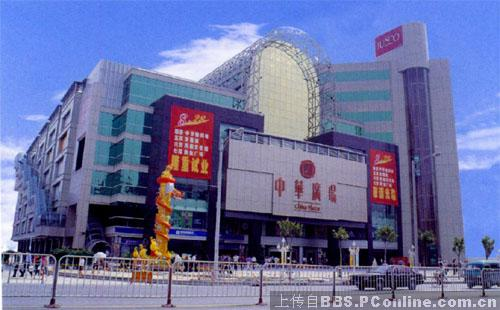
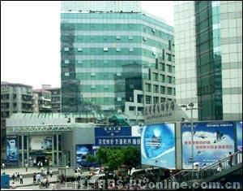
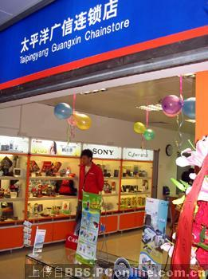
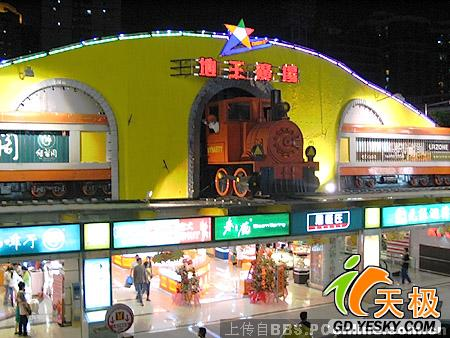

广州买手机最受欢迎的地方
hxzon：广告。
 http://img.pconline.com.cn/images/bbs4/20073/17/1174137159476.jpg http://img.pconline.com.cn/images/bbs4/20073/17/1174138259353.gif http://img.pconline.com.cn/images/bbs4/20073/17/1174137562488.jpg http://img.pconline.com.cn/images/bbs4/20073/17/1174138666548.jpg http://img.pconline.com.cn/images/bbs4/20073/17/1174139840741.jpg
广州中华广场。
中华广场门口很多，东南西北门。在北门四楼，几乎整个楼层都是卖手机的，从进口牌子到国产牌子都有，清一色卖的是行货，牌子和型号琳琅满目。NOKIA 、西门子、索爱的正式维修点那里都有（卖了马上升级，呵呵，一条龙）。在负二层也有些专卖水货的店铺，国内有的，没有的都可以找得到。这里可谓是行货、水货集中地了。想入手机的你怎么能不去看一下。
广州国讯手机经营专卖店。
同样是在广州市内比较有知名度的手机卖场之一，偶以前买的8250现在还好好的，所以一直对国讯也挺有好感。位置就在中华广场斜对面，同样是地处陵园西地段。到了中华广场也要来这里逛逛喔。

广州太平洋电脑城。
在这个大型的IT硬件采购商场里，有部分店铺也是专卖手机的，价格还算是合理的。可以看电脑又可以看手机，真是一举两得呀 ！顺便也凑个热闹，每逢星期六日那边的人多得插针也插不进，你在天桥上往下一看，车水马龙，够壮观呀 ！

广州电信营业厅。
这个不用说了，地球人都知道。分店很多，也很牛。这里买手机质量不用担心，除非是本身机子问题（像NOKIA 5XXX），但较贵一点。没办法，光看门面就知道专业程度，反正是皇帝女儿不愁嫁（你不买 ？他买 ！他不买 ？总会有米人买！）。太平洋一期电脑城门口左则就有一家，到了太平洋也不妨进去看看。偶等平民只会专业路过而已......

地王广场。
图片已经是N年前的了，现在门面已经改变了。同样是多营式经营的一家商业广场，正门开在地下，一进广场就是负一层，故有地王广场之称。负一层同样有很多卖手机的商家，属于间隔式经营。整体看上去明显次于中华广场和国讯的规模；负二层，就是著名的E60供测店（太平洋E60测评的提供者），飞鸿手机专卖（“冰箱” ）店。
不想感受塞车的滋味，一定会跑进地王广场，因为那里......有地铁。 : )
好了，说了那么多，希望最近想入手机的都可以买到称心如意机。